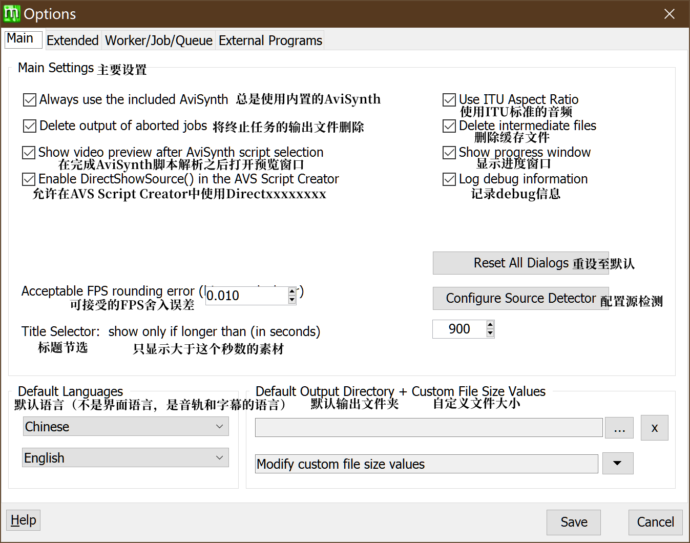
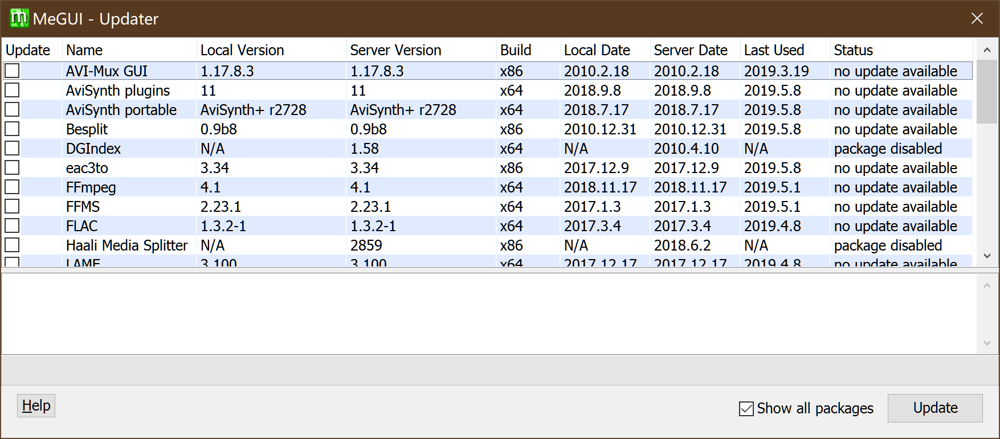

第二章 到认识Megui
本章主要介绍Megui的界面以及其用法
本章共3674字
预计阅读时间>15 min
2.0 准备
- Megui 64位 (如果你电脑是32位的请下载32位的)
2.1 Megui
Megui是一个带有图形化界面的命令行工具集。其功能比小丸强大，压制质量也较高，但操作比较麻烦。
除了本体之外，大部分工具需要在Megui里面进行下载
标注为粗体的为建议下载，标注为高亮的为必须下载
| 名称 | 功能 |
|---|---|
| AVI-Mux GUI | 将多个视频流，音频流，字幕流合并进一个视频文件已停止开发 |
| AviSynth | 用于AVS的预览以及压制 |
| Besplit | 音频流剪切以及修复 |
| DGIndex | 为AviSynth滤镜DGdec建立MPEG流媒体索引 |
| eac3to | 全称encode AC3 to，即转换AC3格式的工具。 |
| FFMpeg | 几乎全能的工具 |
| FFMS | FFmpegSource，跨平台的FFMPEG库，Avisynth滤镜以及索引多媒体 |
| FLAC | flac解编码器 |
| Haali Media Splitter | Mkv剪切工具 |
| LAME | MP3解编码工具 |
| L-SMASH Works | AviSynth滤镜，用于加载多媒体源 |
| MediaInfo | 查看多媒体信息 |
| mkvmerge | 合并多轨mkv |
| MP4Box | 专业的MP4封装工具 |
| NeroAacEnc | 解编码AAC音频流 |
| OggEnc | 编码Ogg文件 |
| Opus | 解编码Opus音频流 |
| PgcDemux | 用于解封装DVD里面的文件(VOB IFO ac3 dts) |
| tsMuxeR | 封装MPEG-ts流文件 |
| VobSub Ripper | 解析DVD中的字幕文件 |
| x264 | H.264/MPEG-4 AVC解编码器 |
| x265 | H.265/HEVC解编码器 |
| XviD | XviD解编码器 |
2.2 Megui的界面
emmmm……
要说的东西有点多
2.2.1 主界面
请注意图片中的值不一定是最好的
2.2.1.1 菜单栏

这里的打开文件会自动进行判断，如果是AVS文件，就插到视频输入区去，如果是其他文件 ，就判断是否有音轨，如果有，就插入到音频区，如果没有，就抛出一个Error
这里是当你开始压制的时候，可以点这里看进度什么的
跳过Tools，那是工具列表，后面讲
跳过Options，因为一点就会进选项界面，后面讲
这里一般用不上，用户指南已经三四年没更新了（
2.2.1.2 视频输入区
先来讲讲视频输入区
AviSynth Script: 这里用于插入AVS脚本文件，你可以像小丸一样把avs拖进去，他会自动进行检测，如果没有错误的化他会打开一个预览窗口

你可以拖动进度条来查看有没有挂上mod或者脚本有没有写漏的
如果确认无误之后右上角关闭就好
Video Output: 视频输出的位置
Encoder settings: 编码器设置

你们可能会没有第二个，第二个是我自己的预设，稍后会讲如何储存编码器预设，右边的Config是设置。
2.2.1.3 音频输入区
在频频输入区你可以选择把音频文件拖进去，也可以输入avs脚本

上面的track选项卡，是当你需要输出mkv的时候才会出现多track的情况，一般用不到。
重复的略过
Cuts: 输入Megui的cut记录文件，可以在菜单栏的Tools-Audio Cut来创建cut记录文件
编码器设置

你们的也许和我的有所不同，可能会少一点，但是我们主要用到的就是Nero AAC或者QAAC，右边的Config是编码选项
这里是输出格式，一般选择MP4-AAC
2.2.2 X264设置界面

这是点开config之后的界面，你们的或许和我的有些不同。现在仅作介绍，里面的参数起什么作用，会在压制这一章说
勾选了“显示高级选项之后”
也许界面略有不同，但是你会发现多出来一堆东西

2.2.2.1 帧设置
这个设置界面主要用于控制画面清晰度，细节等

Deblocking，说成抗锯齿可能会合适一点，强度太大画面会变糊，像是开了线性模糊一样。阈值越小细节越多(图中这个跟没开一样)。
CABAC，就是Context-based Adaptive Binary Arithmetic Coding，前文参考性自适应二元算术编码
GOP其实就是一个帧序列编组，理论上大的数值会比较清晰，但是太大也不好。
Open Gop是一种GOP编码方式，指可以通过上一个GOP序列来预测下一个GOP序列，相对的Close GOP就只会在单个GOP序列里面进行预测。简而言之，打开较好。
Slicing，emmmmmmm这东西很难翻译，大概就是h264里面通过slice这种技术可以提高抗干扰能力，通过将图像分为几个单独的slicing来处理，可以防止错误解码的扩散。
2.2.2.2 码率控制
量化这种码率控制方式已经不常用了，比较重要的就是视频最大码率这一块，建议设置为2350023000，因为b站最大码率限制为24000。
至于VBV Buffer Size的限制和level有关
2.2.2.3 分析

Psychovisual，就是心理的意思，psy是一个比较玄学的选项，简单来说就是让你“看起来”更好。
运动预测嘛emmmm
上图（图略大）

你可以看到这些箭头，这些箭头的意思是根据上一帧以及这一帧预测的下一帧的像素运动，而b帧和p帧是记录这些信息的
而宏块，就是用来将运动预测分为几部分的，如果没有特殊要求的话是不用改的
2.2.2.4 其他

这里的Threads推荐设置为CPU数目*1.5
快速解码和0延迟是在直播流中常用的编码技术
右边的PSNR SSIM选项可以提高编码质量，但是会延长编码时间
stitch able这个一般是用在蓝光盘里面的，一个视频分成几个视频来储存
2.2.3 NeroAAC设置界面

这里Decoder翻译成了编码器XD，翻译错了，应该是解码器

一般来说采取图1的配置方式，要是音质太差可以考虑图二
2.2.4 Queue界面
不讲（
太简单了（
而且你一般也用不上（
2.2.5 Log界面
一般就这样，或许略有不同。
出错了才来看，一般不出错的不用管，出错了也会有提示
2.3 Megui的选项
这里主要是设置Megui整个程序的一些设置，比如说

还是来分块讲吧
2.3.1 主要设置

这边一般不用管，你可以选择在AVS完成解析后不打开预览窗口，不显示压制进度窗口，你也可以自行安装AviSynth然后不使用内置的那个
这个进程优先度建议改，如果你要边压制边用电脑的话，建议改成normal或者below normal，如果不用的话，改成highest就好
一般来说这个是不用管的
2.3.2 额外设置（拓展）
一般来说就不用改了
2.3.3 进程/队列设置

其实这里的预设翻译成规则是不是会好点呢emmmmmm
2.3.4 外部程序设置

neroaac fdk aac 都是要自己下载的
2.4 Megui的工具
2.4.1 Audio Cutter

这就是打开的界面，在Input file处选择打开的文件，Cut file可以通过AVS Cutter来创建，AVS可以通过AVS Script Creator来创建。
嘛……意思就是你需要把音频单独抽出来，然后根据视频时间来剪……
基本没用（
除非你想把歌回的歌 单独抽出来
2.4.2 Auto Encoder
这个和下面的AutoEncode的按钮是一样的，你需要先载入一个视频，然后点auto encode
然后如果你需要输入音频的话就打上下面那个勾，它会给你把音频自动封进去
2.4.3 AVC Quant Matrix Editor
这个就是上面提到的量化矩阵，嘛……一般不用管，除非你是压片组需要特殊设置，比如修复某帧画面，高压之类的
2.4.4 AVS Cutter
他会要求你选择一个AVS脚本，必须要有视频
会打开两个窗口，一个是预览窗口，你可以在上面标题的位置看见现在的时间点，并且在右边的cutter输入
注意时间不能重叠，输入完成后点add可以新建，clear可以清空，update可以更改，remove可以删除一条。
transition style 那里可以选择剪辑之间的转场方式，是不要转场，还是渐变，还是溶解。
你可以选择Add cuts to script来加入AVS脚本，这样编码的时候就会有剪辑的效果。
Save cuts file是用来保存cuts文件，然后输入Audio Cutter进行剪辑的
close就会直接关闭，什么都不会发生
你也可以选择Do all and close 这样的话会写入AVS，同时保存cut文件
2.4.5 AVS Script Creator

先讲一下AVS预设，点右边的config会弹出一个窗口

建议大家在模板处加载一个VSFilterMod的dll，然后点update保存后点ok
这边这一堆额外设置和下面那个一样，只是提供一个默认值而已，通常不用管
当你选择了视频文件之后，会弹出来一个窗口

这里推荐使用第二个 File Indexer，因为第一个如果你输入字幕的话会强制给你变成MKV
然后会打开一个File Indexer的窗口

稍等片刻就好，然后会弹出来一个预览窗口让你预览，现在还是没有字幕的状态，关掉就好，切换到第二个选项卡

其他全都不用管，在字幕那里载入一个ass就好
然后切换到第三个选项卡
你会发现跟模板设置里的一样，甚至自动帮你载好了滤镜，这个时候要注意，如果你加载了Mod的话，和小丸一样，这里要手动改成TextSubMod
然后你可以点击下面的来预览你的文件，确认无误后点save
然后你会发现他自动帮你插入好了，这时候点一下AutoEncode就会打开Auto encoder窗口，然后点右下角的ok，会打开Adaptive Muxer窗口，然后啥都不用改按ok
然后就会自动帮你一条龙服务根本不用担心
2.4.6 Bitrate Calculator
就是码率计算
2.4.7 Chapter Creator
章节创建
有时候你会在看视频的时候发现有些标记
一般来说只对MKV有用

一般来说会把op标出来，方便跳过，像是上面这个一样，第二章就是op
而中间这一个就是转场，后面那一个就是ed
或者有的压片组会把名称标出来，Opening，PartA PartB Ending等的这些
P.S.以上这个出自 [アニメ BD] Fate-kaleid liner プリズマ☆イリヤ(第1期) 第09話「ここで終わらせる」
一般来说选择输出xml格式，然后封装到MKV容器里
2.4.8 File Inxder
一般用L-SMASH来索引，如果出现字幕对不上，可以选择第一个FFMSIndex。然后点queue
2.4.9 HD Streams Extractor
用于抽取光盘里面的文件
2.4.10 Muxer
这里讲一系列封装工具，由于所有muxer的界面都一样，就不分开讲了
这里注意，不要输入字幕文件，否则会强制给你输出mkv
2.4.11 One Click Encoder
One Click Encoder的界面类似于Adaptive Muxer，但是多了一些选项

同样的，输入字幕文件的话会帮你使用MKV来包装，所以如果要打字幕，请用AVS脚本来打
反正就是特别无脑的一键式操作，还是不太推荐
2.4.12 Updater

你可以通过这个来安装工具包，你会发现有些包是disable的，你可以右键这个包然后点击Enable，同样的操作可以disable这个包
然后点下面的update就可以开始安装了
2.4.13 VobSubber

当你输入一个IFO文件之后，会打开一个窗口

然后继续无脑点点点就好
2.5 Megui的使用
如果你有现成的AVS脚本，把它拖到主界面的输入框，然后点视频编码的queue就好
如果你没有，点击 Tool - AVS Script Create
然后拖入视频文件，按照上方说明来使用就好
最后修改
Gerardyang
2019.05.08
本文无法遵守996 License

本作品采用知识共享署名-相同方式共享 4.0 国际许可协议进行许可。